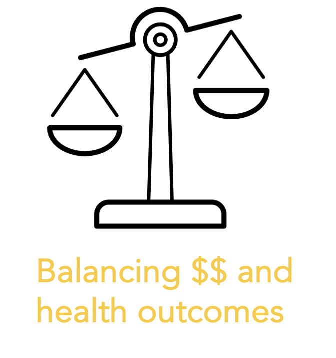
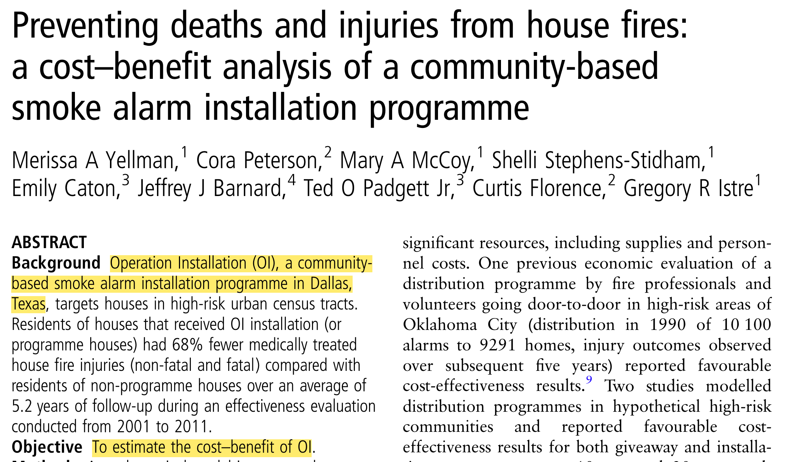
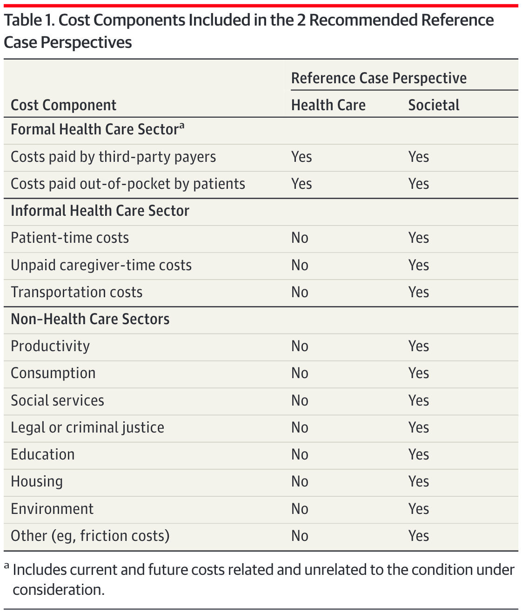
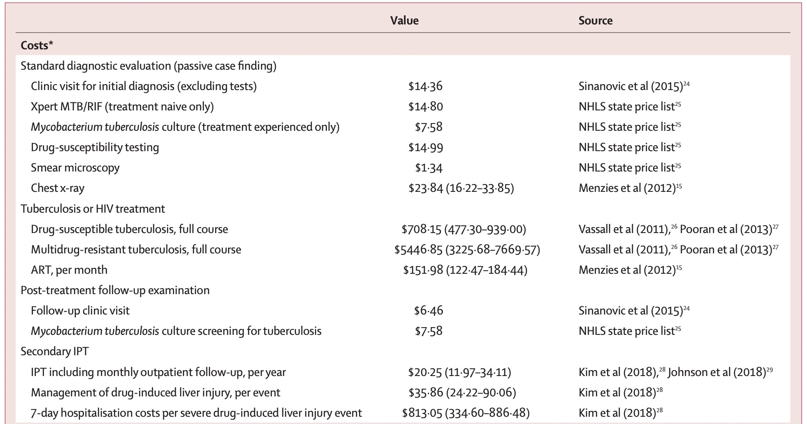

CEA Fundamentals: Valuing Costs
Learning Objectives and Outline
Learning Objectives
Identify theoretical and methodological differences between different economic evaluation techniques
Grasp the foundations of cost-effectiveness analysis
Describe the steps of valuing costs in economic evaluations & identify ways to curate cost parameters
Outline
- Introduction to economic evaluations
- Valuing costs
Introduction to economic evluations
So far…
We’ve touched on the basic framework for decision analysis, focusing on:
Decision trees & probabilities
Bayes theorem & probability revision
Constructing decision trees using Amua
Today…
- We will touch on some of the core concepts for representing costs and health benefits within decision problems
Economic Evaluation
Relevant when decision alternatives have different costs and health consequences.
We want to measure the relative value of one strategy in comparison to others.
This can help us make resource allocation decisions in the face of constraints (e.g., budget).

Features of Economic Evaluation
- Systematic quantification of costs and consequences.
- Comparative analysis of alternative courses of action.
Techniques for Economic Evaluation
| Type of study | Measurement/valuation of costs | Identification of consequences | Measurement / valuation of consequences |
|---|---|---|---|
| Cost analysis | Monetary units | None | None |
Source: [@drummond2015a]
Cost analysis
Only looks at healthcare costs
Relevant when alternative options are equally effective (provide equal benefits)
- Rarely the case in reality!
Costs are valued in monetary terms (e.g., U.S. dollars)
Decision criterion: often to minimize cost
Techniques for Economic Evaluation
| Type of study | Measurement/Valuation of costs | Identification of consequences | Measurement / valuation of consequences |
|---|---|---|---|
| Cost analysis | Monetary units | None | None |
| Cost-effectiveness analysis | Monetary units | Single effect of interest, common to both alternatives, but achieved to different degrees. | Natural units (e.g., life-years gained, disability days saved, points of blood pressure reduction, etc.) |
Source: [@drummond2015a]
Cost-Effectiveness Analysis (CEA)
Most useful when decision makers consider multiple options within a budget, and the relevant outcome is common across strategies
- Costs are valued in monetary terms ($)
- Benefits are valued in terms of clinical outcomes (e.g., cases prevented or cured, lives saved, years of life gained)
- Results reported as a cost-effectiveness ratio
Cost-Effectiveness Analysis
Suppose we are interested in the prolongation of life after an intervention.
Outcome of interest: life-years gained.
The outcome is common to alternative strategies; they differ only in the magnitude of life-years gained.
We can report results in terms of $/Life-years gained
Techniques for Economic Evaluation
| Type of study | Measurement/Valuation of costs both alternative | Identification of consequences | Measurement / valuation of consequences |
|---|---|---|---|
| Cost analysis | Monetary units | None | None |
| Cost-effectiveness analysis | Monetary units | Single effect of interest, common to both alternatives, but achieved to different degrees. | Natural units (e.g., life-years gained, disability days saved, points of blood pressure reduction, etc.) |
| Cost-utility analysis | Monetary units | Single or multiple effects, not necessarily common to both alternatives. | Healthy years (typically measured as quality-adjusted life-years) |
Source: [@drummond2015a]
Cost-Utility Analysis
- Essentially a variant of cost-effectiveness analysis.
- Major feature: use of summary measure of health: QALY.
- Quality-Adjusted Life Year (QALY): A metric that reflects both changes in life expectancy and quality of life (pain, function, or both).
- By far the most widely published form of economic evaluation.
Techniques for Economic Evaluation
| Type of study | Measurement/Valuation of costs both alternative | Identification of consequences | Measurement / valuation of consequences |
|---|---|---|---|
| Cost analysis | Monetary units | None | None |
| Cost-effectiveness analysis | Monetary units | Single effect of interest, common to both alternatives, but achieved to different degrees. | Natural units (e.g., life-years gained, disability days saved, points of blood pressure reduction, etc.) |
| Cost-utility analysis | Monetary units | Single or multiple effects, not necessarily common to both alternatives. | Healthy years (typically measured as quality-adjusted life-years) |
| Cost-benefit analysis | Monetary units | Single or multiple effects, not necessarily common to both alternatives | Monetary units |
Cost-Benefit Analysis
- Also known as Benefit-Cost Analysis
- Relevant for resource allocation between health care and other areas (e.g., education)
- Costs and health consequences are valued in monetary terms (e.g., U.S. dollars)
- Valuation of health consequences in monetary terms ($) is obtained by estimating individuals willingness to pay for life saving or health improving interventions.
- e.g. US estimate of value per statistical life ~$9 million
- Cost-benefit criterion: the benefits of a program > its costs
- Notice that we’re not making comparisons across strategies–only comparisons of costs and benefits for the same strategy
- To read more: Robinson et al, 2019
Cost-Benefit Analysis
https://pubmed.ncbi.nlm.nih.gov/28183740/
Cost-Benefit Analysis
https://www.cambridge.org/core/product/identifier/S2194588818000271/type/journal_article
Back to Cost-Effectiveness Analysis!
- Relevant when healthcare alternatives have different costs & health consequences
\frac{\text{Cost (Intervention A) - Cost (Intervention B)}}{\text{Benefit (A) - Benefit (B)}}
- Relative VALUE of an intervention in comparison to its alternative is expressed as a cost-effectiveness RATIO (the focus of next lecture!)
Who uses economic evaluations?
Health Technology Advisory Committees
NICE (The National Institute for Health and Care Excellence, UK)
Canada’s Drug and Health Technology Agency
PBAC (Pharmaceutical Benefits Advisory Committee in Australia)
Brazil’s health technology assessment institute
Groups developing clinical guidelines
WHO
CDC
Disease-specific organizations: American Cancer Society; American Heart Association; European Stroke Organisation
Regulatory agencies:
FDA (U.S. Food and Drug Administration)
EPA (U.S. Environmental Protection Agency)
CEAs: Identifying Alternatives
Identifying Alternatives
Decision modeling / economic evaluation requires identifying strategies or alternative courses of action.
These alternatives could include different therapies / policies / technologies.
Or, our alternatives could capture different combinations or sequences of treatment (e.g., what dose? what age to start?)
Once we have identified the alternatives, we’ll want to quantify their associated consequences in terms of:
Health outcomes
Costs
CEA components
\frac{\text{Cost (Intervention A) - Cost (Intervention B)}}{\text{Benefit (A) - Benefit (B)}}
Valuing Costs
Valuing Costs: Steps
Source: Gold 1996, Drummond 2015, Gray 2012)
Identify – Estimate the different categories of resources likely to be required (e.g., surgical staff, medical equipment, surgical complications, re-admissions)
Measure – Estimate how much of each resource category is required (e.g. type of staff performing the surgery and time involved, post-surgery length of stay, re-admission rates)
Value – Apply unit costs to each resource category (e.g., salary scales from the relevant hospital or national wage rates for staff inputs, cost per inpatient day for the post-surgery hospital stay)
We can identify different types of healthcare costs
Direct Health Care Costs
Hospital, office, home, facilities
Medications, procedures, tests, professional fees
Direct Non-Health Care Costs
- Childcare, transportation costs
Time Costs
- Patient time receiving care, opportunity cost of time
Productivity costs (‘indirect costs’)
impaired ability to work due to morbidity?
lost economic productivity due to death?
Unrelated healthcare costs
- Cumulative trajectory of total healthcare costs over time (unrelated to medical interventions)
Identifying costs (continued)
In practice, we count what is likely to matter
- Exclude what is likely to have little effect or equal effects across alternatives
Any exclusion must be noted & possible bias examined
We are constrained by what data are available
We can measure costs using different approaches
Micro-costing (bottom-up)
- Measure all resources used by individual patients, then assign the unit cost for each type of resource consumed to calculate the total cost
Gross-costing (top-down)
- Estimate cost for a given volume of patients by dividing the total cost by the volume of service use
- Example: Downstream costs (e.g., hospitalization due to opioid overdose)
Ingredients-based approach (P x Q x C)
Probability of occurrence (P)
Quantity (Q)
Unit costs (C)
Whose perspective?
Sanders GD, Neumann PJ, Basu A, et al. Recommendations for Conduct, Methodological Practices, and Reporting of Cost-effectiveness Analyses: Second Panel on Cost-Effectiveness in Health and Medicine. JAMA. 2016;316:1093–1103.
Whose perspective?
PERSPECTIVE MATTERS –
Formal Healthcare Sector: Medical costs borne by third-party payers & paid for out-of-pocket by patients. Should include current + future costs, related & unrelated to the condition under consideration
Societal perspective: Represents the wider “public interest” & inter-sectoral distribution of resources that are important to consider - reflects costs on all affected parties
Whose perspective?
Healthcare sector perspective
MAMMOGRAPHY (Healthcare Sector):
Costs associated with the screening itself [mammogram procedure + physician time]
Costs of follow-up tests for both false-positive & true positive results
Downstream costs (or savings) associated with cases of breast cancer, such as: Hospitalization + treatment costs
Costs unrelated to medical intervention/disease; of living longer due to mammography
Whose perspective?
Societal perspective
MAMMOGRAPHY (Societal perspective):
Costs associated with the screening itself [mammogram procedure + physician time]
Costs of follow-up tests for both false-positive & true positive results
Downstream costs (or savings) associated with cases of breast cancer, such as: Hospitalization + treatment costs
Costs unrelated to medical intervention/disease; of living longer due to mammography
Patient productivity losses associated with the screening or cancer treatment
Childcare/transportation costs
Data collection
Two approaches:
(1) Alongside clinical trials
(2) Using secondary data
Costs (secondary data)
International versus US will have different approaches
Costs (International)
- In country/hospital/donor data registries - key is to get as close to the “true” cost associated with each procedure per patient
- E.g., “TB healthcare & diagnostics are from official price list of the National Health Laboratory Service in South Africa; Costs for follow-up reflect local clinic and culture-based screening for active-tuberculosis”
- Review of published literature
- Tufts CEA Registry
- DCP3: Disease Control Priorities
Costs (Published Literature)

Costs (Published Literature)
Costs (Tufts CEVR)

https://cevr.tuftsmedicalcenter.org/databases/cea-registry
Costs (Tufts CEVR)

Costs (Tufts CEVR)

Costs (Tufts CEVR)

http://ghcearegistry.org/ghcearegistry/
Costs (Tufts CEVR)

Costs (DCP3)

Adjustments needed for Valuing Costs
Adjusting for currency and currency year
Discounting
Inflation Adjustment
Inflation Adjustment: Motivation
$100 in 2000 is not equivalent to $100 in 2020
- $100 could buy a lot more in 2000!
Important to adjust for the price difference over time, especially when working with cost sources from multiple years
Inflation Adjustment: Example

Inflation Adjustment: Method
Choose a reference year (usually the current year of analysis)
Convert all costs to the reference year
Converting cost in Year X to Year Y (reference year):
\textbf{Cost(Year Y)} = \textbf{Cost(Year X)} \times \frac{\textbf{Price index(Year Y)}}{\textbf{Price index(Year X)}}
Inflation Adjustment: Example
Cost of hospitalization for mild stroke in the US was ~15,000 USD in 2016. What if we want to convert this number to 2020 USD?
PCE (Personal Consumption Expenditure Health Price Index) in 2016: 105.430 (second column of Table 3 (PCE, health)
PCE in 2020: 112.978
\textbf{Cost(2020)} = \textbf{Cost(2016)} \times \frac{\textbf{PCE(2020)}}{\textbf{PCE(2016)}} \\ = 15,000 \times \frac{112.978}{105.430} \\ = 16,674 \ (\text{2020 USD})
Currency Conversion
Currency Conversion
Isn’t required for CEA but may be useful in some situations:
- Example: may need to convert local currency to USD because cost-effectiveness thresholds are often estimated in the unit of USD per DALY.
How do we convert 1,000 Turkish Liras to USD?
Current exchange rate in 2024: 1 Turkish Lira = ~0.029 USD
1,000 Liras = 29 USD
Discounting
Why discounting?
Adjust costs at social discount rate to reflect social “rate of time preference”
Pure time preference (“inpatience”)
Potential catastrophic risk in the future
Economic growth/return
Discounting

Discounting
Inflation: We convert PAST cost to present-day values
Discounting: We convert FUTURE costs to present-day values
How do we discount?
Present value: PV = FV/(1+r)^t
FV = future value, the nominal cost incurred in the future
r = annual discount rate (analogous to interest rate)
t = number of years in future when cost is incurred
Reasonable consensus around 3% per year
May vary according to country guidelines
Adjust for inflation and currency first, then discount
Intuition
r = 0.03
Recall that PV = FV/(1+r)^t, and we’re at Year 0:
$1 in Year 0 is valued as 1/1.03^0 = \$ 1
$1 in Year 1 is valued as 1/1.03^1 = \$0.97
$1 in Year 2 is valued as 1/1.03^2 = \$0.94
$1 in Year 3 is valued as 1/1.03^3 = \$0.92
…
In other words, we are converting what a $1 would be in Year 2, for example, to the PRESENT VALUE of today. Today, it will be 0.94.
Example
- Assume in year 5, a patient develops disease, and there is a treatment cost of $500
- This is the future value (FV) of the cost!
- Present value PV = FV/(1+r)^t = 500/(1+0.03)^5 = \$ 431.3